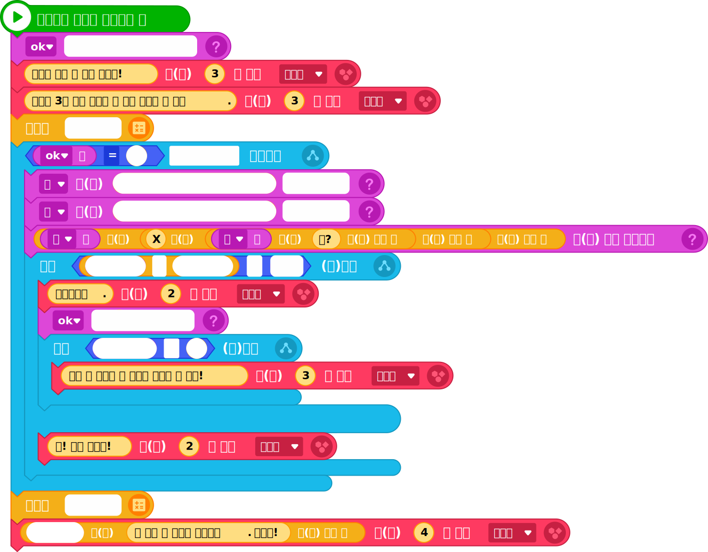

구구단 방에 들어왔다. 이 방은 랜덤 구구단 문제를 3문제 이상 맞혀야 탈출할 수 있다. 구구단 방 탈출 프로그램을 작성해 보자.
1문제 이해 및 분석
구구단 방 탈출 방법 및 절차를 생각해 보자.
- ①엔트리봇이 내는 문제를 맞힌다.
- ②문제를 맞히면 OK 값은 1 증가한다.
- ③다음 랜덤 구구단 문제를 맞힌다.
- ④OK 값이 3이 되면 구구단 방을 탈출한다.
2알고리즘 설계
①프로그램을 위해 오브젝트가 구현해야 할 기능을 생각해 보자.
오브젝트가 구현해야 할 기능
| 생각 엔트리봇 |
- 방탈출 안내 방법을 알려 준다.
- 초시계를 시작한다.
- 랜덤 구구단 문제를 3개 맞힐때까지(ok=3) 계속해서 문제를 제시한다.
- 문제의 답을 맞히면, 변수 ok의 값을 1 증가한다.
- 정답 개수가 2개가 되면 방 탈출을 격려하는 응원의 메시지를 표시한다.
- 사용자가 입력한 답이 틀리면 오답 메시지를 표시한다.
- 사용자가 문제를 3개 맞히면 반복을 종료하고, 초시계를 정지한다.
|
②프로그램에 필요한 변수를 생각해 보자.
- 단 : 랜덤으로 정한 단 값을 저장
- 수 : 랜덤으로 정한 수 값을 저장
- Ok : 맞힌 문제의 개수를 저장
③프로그램에 필요한 연산자를 생각해 보자.
-
3문제를 맞힐때까지 반복
-
정답인지 판단하여 동작을 선택
3프로그래밍
①준비하기
②프로그램 작성하기
프로그래밍 작성하기
| 오브젝트 |
명령 블록 |
|
 |
Tip
초시계의 상태를 정한다.
- 시작하기: 초시계를 시작한다.
- 정지하기: 초시계를 정지한다.
- 초기화하기: 초시계의 값을 0으로 초기화한다.
4결과 확인 및 디버깅
프로그램을 실행하여 실행 결과를 확인해 보자.